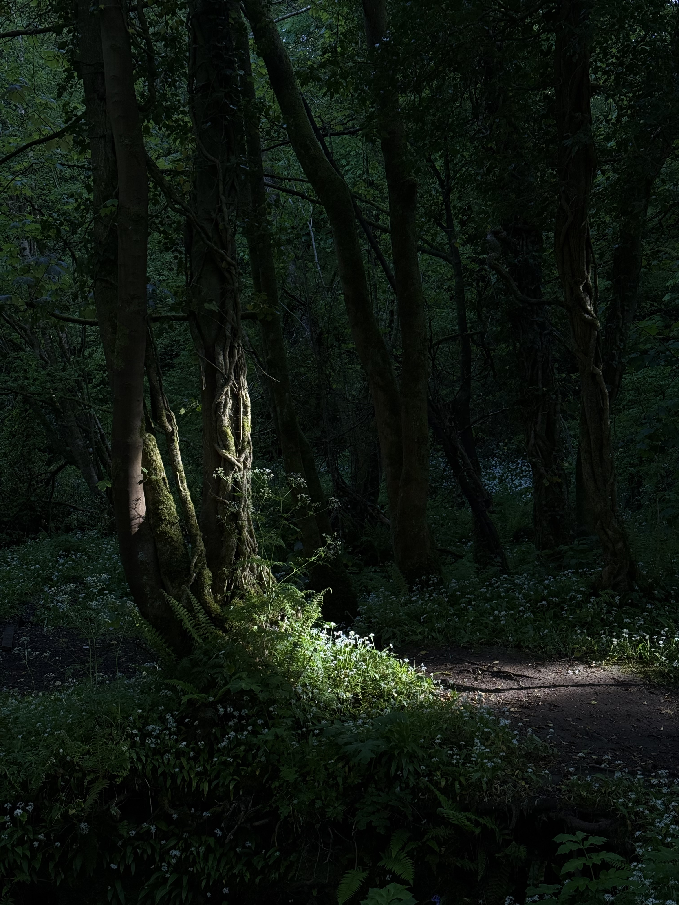
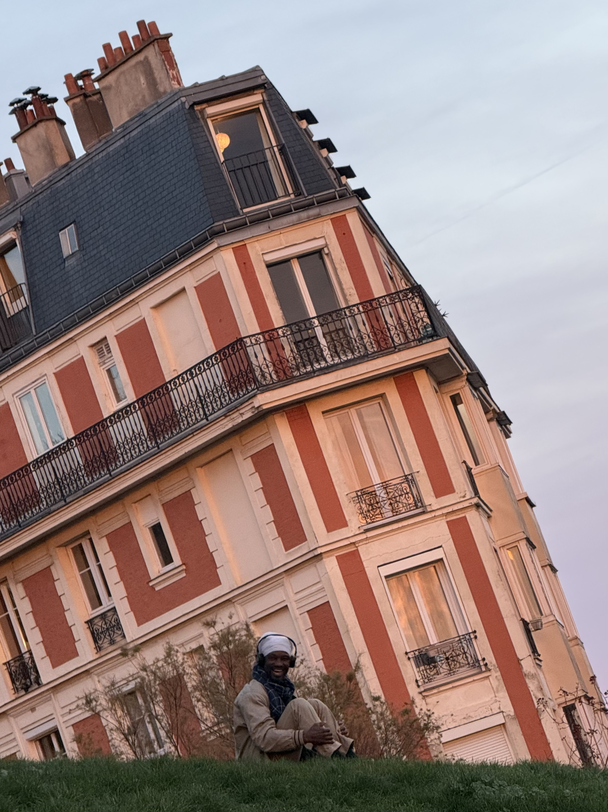
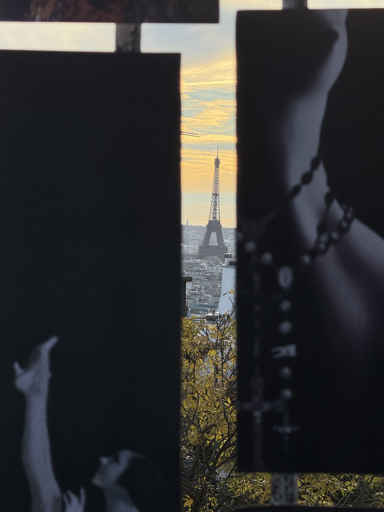
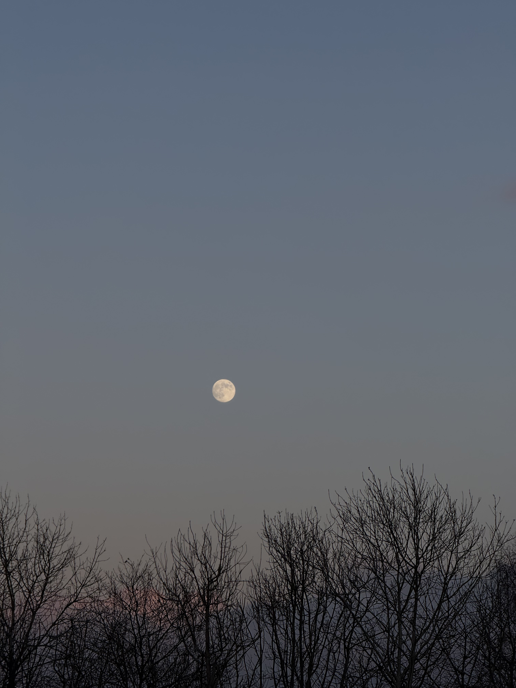
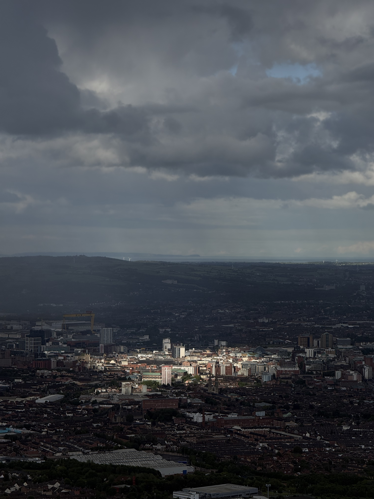

Projects
Different ways of looking.

Latest observations
View all
Blue wall, morning light
Belfast
May 20, 2026

Rain on the ground
Belfast
May 18, 2026

A pause
Interlude
May 17, 2026

Yellow, almost fading
Palette
May 15, 2026
From the journal
View all

Learning to notice the ordinary
May 12, 2026
I used to look for moments. Now I try to notice what has always been there.
Read entry →